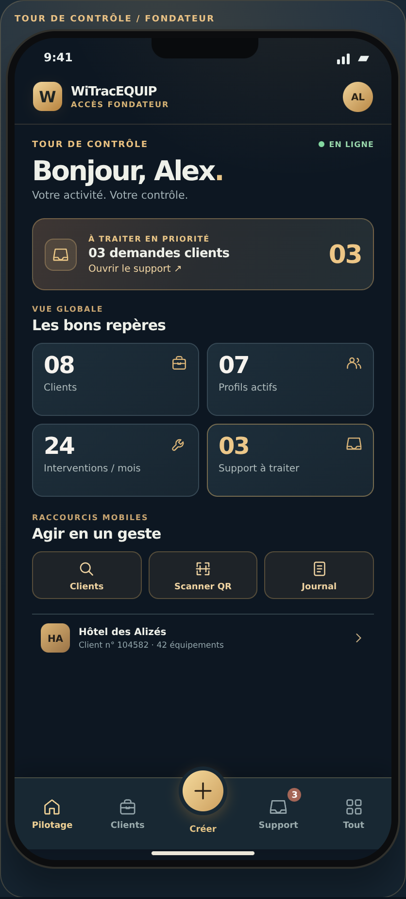
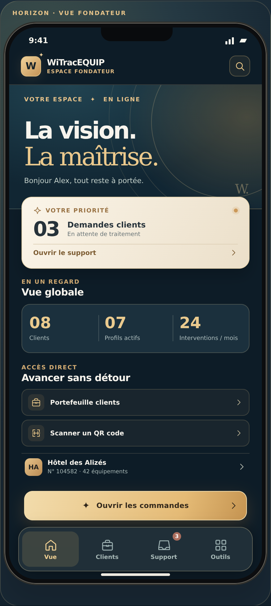
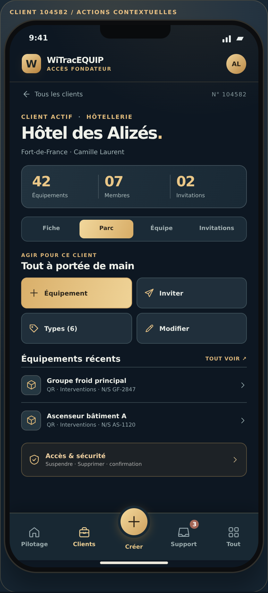
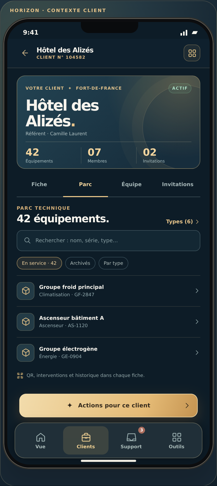
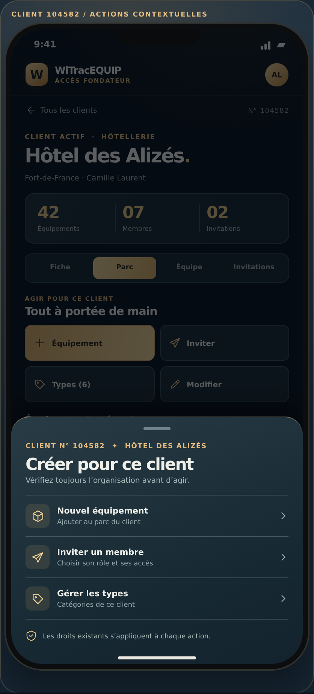
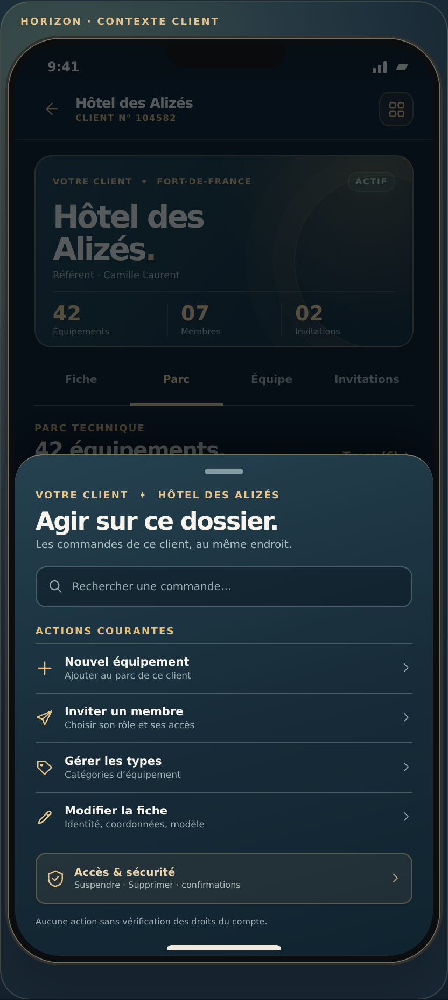

A / 02
DIRECTTour de contrôle
Une densité assumée. Les tâches, puis les indicateurs.

014 compteurs toujours visibles
02« + » central accessible au pouce
035 accès principaux en bas
La même activité, vue depuis le téléphone du Fondateur. Aucune donnée réelle.
Une densité assumée. Les tâches, puis les indicateurs.

Une hiérarchie plus calme. L’urgence ressort vraiment.

Fiche, parc, équipe et invitations restent présents. Ce qui change : l’accès aux commandes.
Équipement, invitation, types et édition directement visibles.

Le parc est plus lisible ; la palette rappelle le nom du client.

Le menu de création garde toujours le client concerné sous les yeux et les droits inchangés.
Un accès central aux trois commandes courantes du client.

Les mêmes actions, plus l’édition et la sécurité regroupées.
